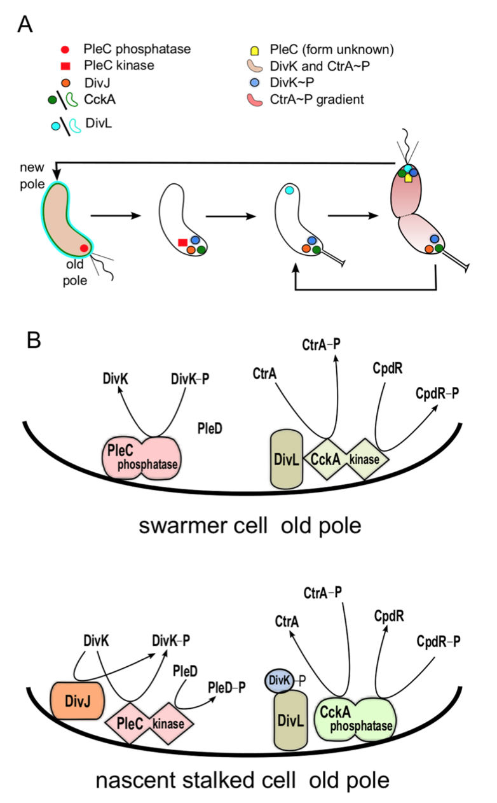
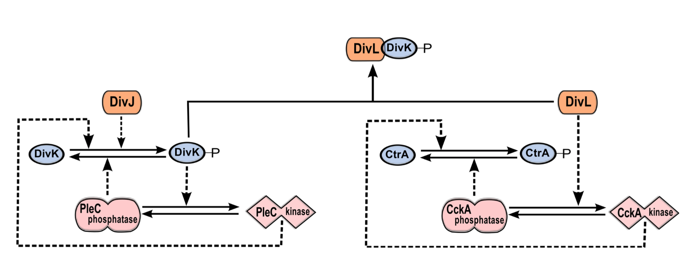
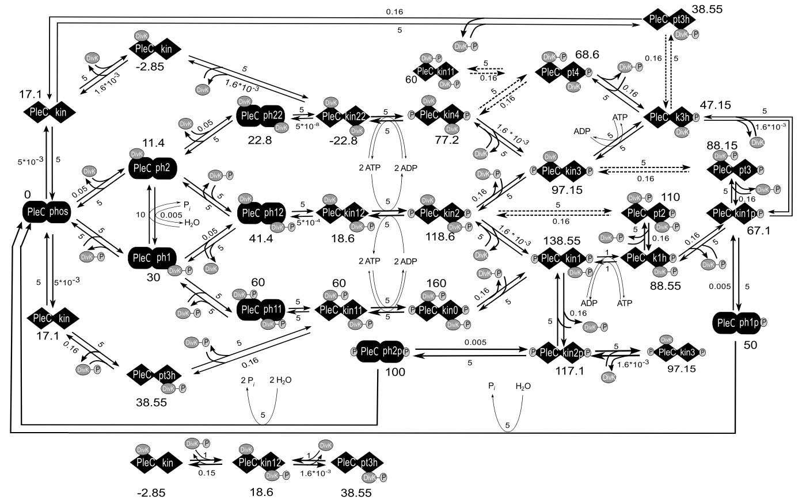
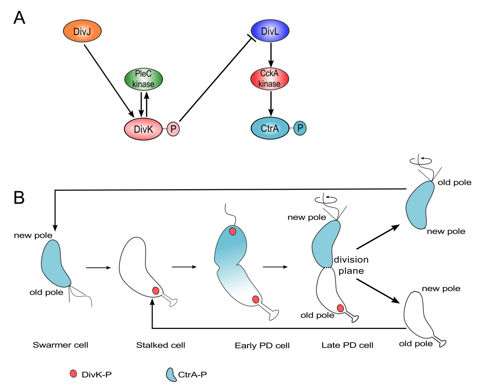
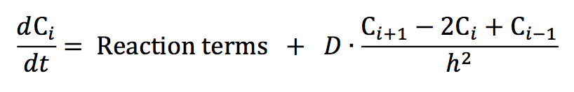
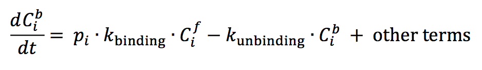

Bistable Histidine Kinase
Model
Bistable histidine kinase switch in Caulobacter crescentus
Orchestration of this asymmetric cell division cycle requires proper temporal and spatial regulation of several key proteins (see Figure 2.1 A). The temporal dynamics of these proteins was captured in a pair of papers by Li et al. [1,2]. At least two of these proteins, PleC and CckA, are bifunctional, capable of acting as either phosphatase or kinase. PleC kinase activity is up- regulated by its own response regulator, DivK. It is unknown how DivK alters the activity of its own phosphorylating enzyme, PleC. DivK is present at roughly constant level throughout the cell cycle [3]. However, PleC is a phosphatase during the swarmer stage of the cell cycle and kinase during the stalked stage (see Figure 2.1 B).

Figure 2.1: Morphological transitions in Caulobacter crescentus are governed by changes in localization and activity of proteins. (A) Schematic representation of the Caulobacter crescentus cell cycle. The cell undergoes a series of morphological changes from swarmer cell (left)→nascent stalked cell→stalked cell→pre-divisonal cell (right). These events are driven by changes in the activity and localization of cell cycle proteins. In particular, notice that DivL (light blue) and CckA (green) are uniformly distributed on the membrane in the swarmer cell but localized at the poles in the stalked cell. (B) Model of the status of PleC and CckA activity at the old pole in the swarmer cell and in the nascent stalked cell. In the swarmer cell, DivJ is not localized or activated. As a result, PleC is a phosphatase and CckA is a kinase. In the stalked cell, DivJ is localized to the old pole, causing PleC to flip to the kinase form, which in turn induces CckA to switch to a phosphatase.
The phosphorylation states of DivK and CtrA are governed by the bifunctional histidine kinases PleC and CckA, respectively. Both PleC and CckA can switch between two conformations: a kinase conformation and a phosphatase conformation [4,5] (see Figure 2.1 B). Typically, in bacteria the change in activity of a bifunctional histidine kinase is brought about by an external signal molecule binding to the sensor region of the protein [6]. However, the change in PleC from a phosphatase to a kinase is brought about by its substrate, DivK [4]. In fact, the sensor domain of PleC is not essential for its function [7]. This interaction, where substrate binding to a bifunctional histidine kinase changes its function, has, to our knowledge, been observed only for PleC in Caulobacter. It has been suggested that DivK up-regulates PleC kinase activity preferentially in stalked cells because it is in stalked cells where DivK~P and PleC are co-localized at the poles [4].

Figure 2.2: The DivJ-PleC-DivK and DivL-CckA-CtrA modules are coupled via DivK~P-DivL interaction. PleC kinase and DivK~P are involved in a positive feedback loop. By phosphorylating DivK, DivJ biases the positive feedback loop toward the PleC kinase state. DivL up-regulates the kinase form of CckA, which in turn phosphorylates CtrA. The phosphorylated form of DivK~P binds to and inactivates DivL, causing CckA to revert to the phosphatase form and dephosphorylate CtrA.
Taken together, these observations suggest that PleC-DivJ-DivK and DivL-CckA-CtrA are crucial drivers of the swarmer-to-stalked transition, as summarized in Figure 2.1 and Figure 2.2.
Method
Here, we propose a mechanism for ligand-dependent modifications of the bifunctional histidine kinase, PleC. The mechanism consists of elementary chemical reactions describing ligands (either DivK or DivK~P) binding to the histidine kinase dimer in either its phosphatase or kinase form. The binding states determine the rates of the autophosphorylation, phosphotransfer, and phosphatase reactions catalyzed by PleC. If DivK~P is more efficient than unphosphorylated DivK at promoting the transition of PleC from phosphatase to kinase, then PleC and DivK~P would be involved in a positive feedback loop. Such positive feedback loops are well known for their tendency to function as bistable toggle switches [8], and toggle switches are well known for their roles in cellular decision- making [9-11] including critical transitions in the eukaryotic cell cycle [12-14].
We have a detailed model of the interactions between DivK and PleC, under reasonable conditions on the rate constants (or propensities) of these reactions, exhibits robust bistability as a function of DivJ activity. The complete reaction network (Figure 2.3) was translated into a system of 52 non-linear ordinary differential equations using the mass-action law of chemical kinetics, with one exception. The mechanism by which DivL promotes the kinase form of CckA is unknown, so we modeled this step phenomenologically with a Hill function. Because there are many closed loops of elementary chemical reactions in Figure 2.3, we must choose rate constant values that respect the thermodynamic principle of detailed balance. As long as we satisfy these thermodynamic constraints, we find that the reaction network exhibits bistability over a robust range of parameter values.

Figure 2.3: Chemical reaction networks on which the model is based. Here we only show the PleC-DivK system.
The equations for the full model were encoded as .ode files and simulated using the freely available software, XPP-AUT. The signal-response curves were drawn using the AUTO facility of XPP-AUT. From the data points generated by XPP-AUT, the plots shown in the figures were generated using the python library, Matplotlib [15].
Results
1. DivJ-dependent phosphorylation of DivK is crucial for switching PleC from a phosphatase to a kinase
Figure 2.4: DivJ initiates the PleC phosphatase-to-kinase transition. For the full model, we plot signal-response curves (one-parameter bifurcation diagrams) for the steady state levels of (A) PleC kinase, (B) DivK~P, (C) PleD~P, and (D) DivK bound to PleC as functions of total DivJ (the parameter DivJ_tot in the model). Solid lines, stable steady states; dashed lines, unstable steady states. In our model, PleC_tot = constant = 1.0, but total DivK, total CtrA, and total PleD depends on DivJ_tot.
2. DivJ-dependent phosphorylation of DivK is crucial for switching PleC from a phosphatase to a kinase
Figure 2.5: Over-expressing DivK causes a drop in PleD phosphorylation. The steady state level of PleD~P is plotted against increasing amount of total DivK for (A) ΔdivJ divKD53N, (B) ΔdivJ, and (C) wild type background. Although the absolute levels vary among the three cell types, in each case PleD~P level shows an initial increase followed by a drop at high DivK.
Figure 2.6: Over-expressing DivK causes activation the PleC switch independent of DivJ. (A) Two-parameter bifurcation diagram, indicating how the PleC switch behaves in cells expressing different levels of DivJ_tot and DivK_total (ksyn_dk is the rate constant for synthesis of DivK). PleC exhibits bistability within the crescent-shaped region bounded by the blue lines. (B) One-parameter bifurcation diagrams (signal-response curves) for three different values of ksyn_dk, indicated by the dashed hoizontal lines in panel A. Notice that PleC kinase level is always low if ksyn_dk<0.011 and always high if ksyn_dk>0.082.
3. The PleC-DivJ-DivK switch confers bistability to the DivL-CckA-CtrA module

Figure 2.7: The DivJ-PleC-DivK module controls the DivL-CckA-CtrA module. When the PleC switch is activated, DivK~P binds to DivL and inactivates components of the CckA module. One parameter bifurcation diagrams show the steady state levels of (A) DivL, (B) CckA kinase, (C) CtrA~P, and (D) CpdR~P as functions of DivJ_tot.
PleC and DivL Localization
Model
The conundrum of phosphorylation status of PleC and DivK in the predivisional cell
Progression through the Caulobacter cell cycle is dictated by the phosphorylation status of two proteins, DivK and CtrA. These two proteins are response regulators at the termini of two phosphotransfer modules (DivJ-PleC-DivK and DivL-CckA-CtrA) (Figure 3.1 A). PleC and CckA are bifunctional histidine- modifying enzymes that may act as either kinases or phosphatases [1,2]. Both PleC and DivJ can phosphorylate DivK, while the role of DivL is to up-regulate CckA's kinase activity [3]. (DivL is tyrosine kinase, but its kinase activity is not involved in the up-regulation of CckA [3]; how DivL promotes CckA activity is still unknown.) DivK~P binds to and inhibits DivL [4]. In a swarmer cell, DivJ is absent, PleC is a phosphatase, and DivK is unphosphorylated. Consequently, DivL is actively up-regulating CckA kinase activity [5], which in turn maintains CtrA in its phosphorylated form, thereby inhibiting DNA replication in the swarmer cell [6]. The introduction of DivJ during the swarmer-to-stalked transition enables the phosphorylation of DivK~P, triggering a pathway that culminates in the dephosphorylation of CtrA~P in stalked cells [7-9]. Therefore, at the molecular level, swarmer and stalked cells can be distinguished based on which response regulator-CtrA or DivK is phosphorylated.
The schematic in Figure 3.1 A suggests that DivK and CtrA cannot be concurrently phosphorylated during the cell cycle. Therefore, it is surprising that both response regulators are phosphorylated in predivisional cells (Figure 3.1 B). While the level of DivK~P remains fairly constant in the stalked and predivisional stages [10], CtrA~P level changes sharply from lowest in the stalked cell stage to peak activity in the predivisional stage [2,11]. Recent experimental observations [4,5] favor a model where DivL is active (up-regulating CckA kinase) in the predivisional Caulobacter cell. Hence, DivL, inactivated by DivK~P during the swarmer-to-stalked transition, appears to be reactivated in the predivisional cell, despite the continuing presence of DivK~P. It is unclear how the inhibitory interaction between DivK~P and DivL that is required for swarmer-to-stalked transition early in the cell cycle is circumvented in the predivisional stage of the cell cycle.

Figure 3.1: Both DivK and CtrA are phosphorylated during the predivisional stage of the Caulobacter cell cycle. (A) Influence diagram of two signal transduction pathways in C. crescentus. Barbed arrows indicate activation, while the blunt-headed line indicates inhibition. (B) Spatiotemporal distributions of DivK~P (red) and CtrA~P (light blue).
Contrasting models of PleC function
Of the informal models, the first (in support of PleC kinase) is necessary to explain stalk formation, while the second (in favor of PleC phosphatase) posits conditions that are to be satisfied for replicative asymmetry. While the first model lays out the evolution of PleC function during the course of the cell cycle, the second model only addresses the plausible function of PleC in the predivisional cell. Since PleC-dependent phosphorylation of PleD is required for the development of the stalk, it is fair to assume that PleC is a kinase in the stalked cell. Hence, the difference in the two models can be narrowed down to the suggested function of PleC at the new pole of the predivisional cell (Figure 3.2).

Figure 3.2: Two scenarios for the function of PleC (kinase or phosphatase) in the early predivisional (PD) cell. Spatiotemporal dynamics of PleC (green) and DivL (dark blue) during the cell cycle under these two scenarios.
Method
Our reaction-diffusion model is based on the mechanism proposed in our earlier paper [17]. The proteins under investigation show non-homogeneous distributions along the long axis of a Caulobacter cell; hence, we consider it sufficient to formulate the model for one spatial dimension. The governing partial differential equation (PDE) for a generic chemical species takes the form:

where C(x,t) is the concentration of species C at location x and time t. The PDEs on which we base our explorations are provided in Table B.1. By discretizing the spatial dimension into n = 100 compartments of equal length h = L/n, where L is the total length of the Caulobacter cell and using a central difference scheme to approximate the Laplacian operator, we convert each PDE into a set of ordinary differential equations (ODEs). In our notation, Ci is the concentration of species C in compartment i where

A complete understanding of the mechanism behind localization of DivJ, PleC, DivL and CckA is lacking at this stage, and our model does not attempt to offer one. We enforce the localization of these four kinases based on experimentally observed distributions in wild-type and mutant cells [8,11,12,13,14]. We do this by defining rates of binding and unbinding of species C to docking proteins in compartment i as follows:

where pi is an indicator function that takes the value of 1 or 0, Cib is the concentration of the localized form and Cif is the concentration of the freely diffusing form of a generic protein in compartment i of the cell.
The full set of ODEs were simulated in MATLAB using the ode15s solver [15]. The spatiotemporal distribution plots in the figures were generated using the python library Matplotlib [16]. The colors indicate the concentration gradient from zero (blue) to the maximum value of protein concentration (red) during the cell cycle. A disadvantage of such a plot is that a shallow gradient can be interpreted as significant changes in protein activity and localization. On the other hand, a very steep gradient can result in underestimation of fluctuations in protein activity and localization occurring at the lower range of concentration values. To avoid these problems and to make comparison between wild-type and mutant simulations more convenient, the color bar for each simulation indicates the concentration gradient from zero (blue) to maximum wild-type concentration Cwt_max (red).
What is the Cell Cycle?
Living organisms are constantly making new cells. New cells are created to help an organism grow and to replace old dead cells. The process by which new cells are made is called cell division. Cell division is constantly happening and around two trillion cell divisions take place in the average human body every day! (read more about cell division)
The cell cycle is a series of changes a cell goes through as it grows and divides. At the end of the cell cycle, the cell divides into two identical "daughter" cells. Depending on what type of organism the cell belongs to, there are three main types of cell division.
3 Types of Cell Division
Binary Fission
Binary fission is an example of asexual reproduction and is a process used by simple organisms like bacteria. The first step in this process is the cell grows to twice it's normal size and creates an identical copy of it's DNA. Once the two strands of DNA move to opposite ends of the cell, the cell wall squeezes the middle of the cell, splitting it into two identical, separate cells.
Mitosis
While simple organisms like bacteria use binary fission to duplicate, more complex organisms multiply using either mitosis or meiosis. Mitosis is an essential process for life. Cells that make up skin, blood and muscles in the human body use mitosis to create new cells that are exact replicates of the original cell. During mitosis, a cell duplicates all of its contents, including it's DNA strand, and splits into two identical daughter cells. Since Mitosis is such an important process for the body to grow and survive, the mitosis process is carefully controlled by certain genes in the cell. If the steps of mitosis are not regulated, then serious health problems such as cancer can occur.
Meiosis
The other type of cell divion used by more complex cells is meiosis, which creates new reproductive or sex cells. Sex cells include egg cells for women and sperm cells for men, which both contain half the genetic material (DNA) needed to create a fetus. Body cells are known as diploids, because they have two sets of chromosones, one from each parent. During meiosis one cell duplicates it's chromosones then divides twice to form four daughter cells. Each of the four daughter cells have half the number of chromosones of the parent cell, since the parent cell doubled it's number of chromosones and distributed them evenly amongst the daughter cells.
Why is it Important to Study the Cell Cycle?
Studying the cell cycle and how new cells are created is incredibly relevant to the health, well-being and bology of all organisms. We have a much stronger understanding of diseases and injury recovery thanks to the work done by scientists who study the growth of cells. The cell cycle and cell division is the engine that powers the growth of all organisms. Microbiology, which is the study of all living organisms that are too small to be naked eye (Learn about Microbiology), will be a crucial role in the next wave of scientific breakthroughs related to animal and plant health.
Some of the areas where cell division research plays a significant role include:
- Cancer Research:
- Stem Cell Treatment:
- Alzheimers Research:
- Immunology and The Spread of Diseases:
Caulobacter cell Division Visualization
Reference
- “What Is Mitosis?” Facts, The Public Engagement Team at the Wellcome Genome Campus, 21 July 2021, https://www.yourgenome.org/facts/what-is-mitosis.
- McIntosh, J. Richard, and Michael P. Koonce. “Mitosis.” Science.org, 3 Nov. 1989, https://www.science.org/doi/abs/10.1126/science.2683078.
- Nurse, Paul, et al. “Understanding the Cell Cycle.” Nature Medicine, vol. 4, no. 10, 1998, pp. 1103–1106., https://doi.org/10.1038/2594.